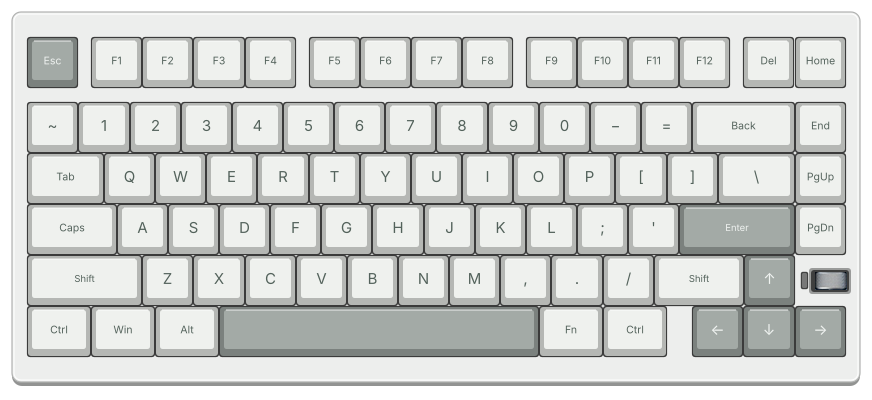

Connect
Use USB-C with Fn + T, or plug in the NUT75 2.4 GHz receiver. Close the web driver first.
Make every key feel like yours. Remap, create macros and find your light, in a desktop app made for your keyboard.


The keyboard stays at the center. Everything you need is close by.
Remap Default and Fn layers. Test keys and modifiers, watch Caps Lock and turn the volume roller.
↗ 02Explore animated previews, a color wheel, saved colors and per-key lighting. Manufacturer shortcuts are always close.
↗ 03Record a sequence, edit delays, move actions by dragging and remove just the step you need.
↗ 04SOCD, tap/hold, toggle and key combinations. Find your advanced assignments in one dedicated view.
↗ 05Adjust operating-system mode, polling, sleep, debounce and key behavior from a single panel.
↗ 06Local profiles, keyboard finishes, eight languages and light or dark appearance. No account required.
↗The NUT75 model is your canvas. Tested keys stay green, with Caps Lock and roller feedback in place.
01 / 06Try your changes locally, then write them when you’re ready.

Use USB-C with Fn + T, or plug in the NUT75 2.4 GHz receiver. Close the web driver first.
Choose a key, try a lighting effect or build a macro. Your edits live in a local profile.
Apply when ready. NUT Studio writes the changes and reads the configuration back to check it.
Free to download. Your profiles stay on your computer.
Version 0.9.0
Choose your Mac’s processor. The installer puts NUT Studio in Applications.
Apple Silicon .pkg ↓Intel .pkg ↓Use the x64 installer, or keep it portable with an archive you can extract and run.
Windows x64 Setup ↓Portable .zip ↓NUT Studio currently supports the WEIKAV NUT75 only, over USB-C or the NUT75 2.4 GHz receiver. Keyboard finish is selected in Settings. Other WEIKAV models are not supported.
Bluetooth configuration is not supported. Use a USB-C data cable and select USB mode with Fn + T, or use the NUT75 receiver.
They are separate from normal key backlighting. App control depends on firmware, and is unavailable on the tested firmware 1.40. Each lighting tab shows the relevant shortcuts from the manufacturer’s manual.
The preview illustrates the effect’s movement. Firmware can render it differently and some effects use automatic RGB colors. The app only enables controls supported by the selected mode.
Keys, macros, advanced bindings, local profiles and core lighting/device settings are available. GIF/animation upload, audio/AI lighting, firmware updates and factory reset are not included.
No account is required. Configuration, profiles, fonts and all eight UI languages work locally. Internet is only needed to download the app or open external guides.
Current installers are not signed with an Apple Developer ID or Windows publisher certificate. macOS and Windows packages are built on their respective systems. Physical keyboard checks have been performed on macOS; Windows hardware behavior is not yet verified.